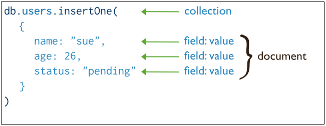
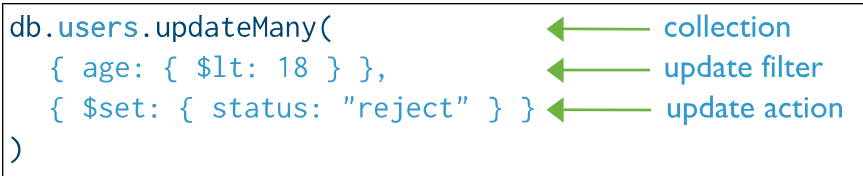

7. Operaciones CRUD
En este punto vamos a ver las operaciones más básicas, para la creación, consulta, actualización y eliminación de documentos de una colección.
Colección
Hay dos formas de crear una colección:
1) Utilizando createCollection():
db.createCollection("ejemplo")
2) Con el comando insert, creará la colección ejemplo si todavía no existe:
> db.ejemplo.insertOne(object)
Create: insert
La sentencia insert() se ha comparado tradicionalmente con la sentencia INSERT de SQL.

MongoDB proporciona los siguientes métodos para insertar documentos en una colección.
Sintaxis:
db.coleccion.insertOne({documento})
db.coleccion.insertMany([{documento1},{documento2},...])
-
insertOne(): Inserta un único documento en una colección. Se utiliza cuando se quiere añadir un solo registro de forma puntual.
-
insertMany([]): Inserta varios documentos simultáneamente en una colección. Los documentos deben indicarse dentro de un array de objetos []. Es más eficiente cuando se necesita insertar múltiples registros.
Ambos métodos utilizan un único parámetro:
1) DOCUMENTO o ARRAY DE DOCUMENTOS (obligatorio): En este parámetro se indica el documento que se desea insertar o un array de documentos. El documento puede escribirse directamente en la sentencia o almacenarse previamente en una variable. Si la colección no existía previamente, MongoDB la creará automáticamente y, a continuación, insertará el documento o los documentos indicados.
Veamos a continuación varios ejemplos de inserción de documentos en una colección utilizando el método insertOne().
> db.ejemplo.insertOne({ msg : "Hola, ¿qué tal?"})
Acabamos de insertar un nuevo documento en la colección ejemplo. El resultado de la ejecución nos indica que la operación se ha realizado correctamente, mostrando que se ha insertado un documento. ( { "nInserted" : 1 }
A continuación, insertamos un segundo documento en la misma colección:
> db.ejemplo.insertOne({ msg2 : "¿Cómo va la cosa?"})
En este caso, el resultado también indica que se ha insertado un documento correctamente.
Por último, insertamos un tercer documento, pero esta vez guardamos previamente el contenido en una variable llamada doc y después lo insertamos utilizando insertOne():
> doc = { msg3 : "Por aquí no podemos quejarnos..."}
> db.ejemplo.insertOne(doc)
En este caso, también nos indica que ha insertado un documento.
Sin embargo, cuando los documentos que queremos insertar son sencillos, podemos insertar varios a la vez utilizando el método insertMany(), pasando como argumento un array ([]) que contenga todos los documentos.
En el siguiente ejemplo insertamos varios números primos en la colección del mismo nombre:
> db.numerosprimos.insertMany( [ {_id:2} , {_id:3} , {_id:5} , {_id:7} , {_id:11}
> , {_id:13} , {_id:17} , {_id:19} ] )
BulkWriteResult({
"writeErrors" : [ ],
"writeConcernErrors" : [ ],
"nInserted" : 8,
"nUpserted" : 0,
"nMatched" : 0,
"nModified" : 0,
"nRemoved" : 0,
"upserted" : [ ]
})
Nos avisa que ha realizado 8 inserciones, y aquí los tenemos:
> db.numerosprimos.find()
{ "_id" : 2 }
{ "_id" : 3 }
{ "_id" : 5 }
{ "_id" : 7 }
{ "_id" : 11 }
{ "_id" : 13 }
{ "_id" : 17 }
{ "_id" : 19 }
>
Clave _id automática
Durante el proceso de inserción de documentos, MongoDB crea automáticamente la clave _id para cada documento insertado cuando no se especifica explícitamente.
Esta clave toma un valor de tipo ObjectId y actúa como identificador único, lo que permite distinguir cada documento del resto dentro de la colección.
Este comportamiento es automático y obligatorio, ya que MongoDB necesita siempre un identificador para gestionar los documentos.
Clave _id manual
No obstante, también podemos definir manualmente la clave _id y asignarle el valor que queramos. En este caso, debemos asegurarnos de que dicho valor no esté repetido en ningún otro documento de la colección, ya que el clave _id debe ser único. Si se repite, MongoDB devolverá un error.
Veamos un ejemplo:
Vamos a insertar información de varios alumnos en una nueva colección llamada alumnos, asignando manualmente un _id personalizado (por ejemplo, valores numéricos: 51, 52, 53, …):
> db.alumnos.insertOne ({_id: 51 , nombre: "Rebeca" , apellidos: "Martí Peral"})
> db.alumnos.insertOne ({_id: 52 , nombre : "Abel", apellidos : "Bernat Cantera", edad : 22, dirección : {calle : "Mayor", numero : 7, cp : "12502" }, nota : [ 9.5, 9 ] } )
La inserción se realiza correctamente. Si consultamos ahora los documentos de la colección, comprobaremos que MongoDB ha respetado el valor de la clave _id indicado:
> db.alumnos.find()
[
{ _id: 51, nombre: 'Rebeca', apellidos: 'Martí Peral'
},
{
_id: 52,
nombre: 'Abel',
apellidos: 'Bernat Cantera',
edad: 22,
'dirección': { calle: 'Mayor', numero: 7, cp: '12502' },
nota: [ 9.5, 9 ]
}
]
Sin embargo, si intentamos insertar otro documento utilizando el mismo _id (51), MongoDB devolverá un error:
> db.alumnos.insertOne ({_id: 51 , nombre: "Raquel" , apellidos: "Gomis Arnau"})
WriteResult({
"nInserted" : 0,
"writeError" : {
"code" : 11000,
"errmsg" : "E11000 duplicate key error collection: test.alumnos index: _id_
dup key: { : 51.0 }"
}
})
MongoDB nos indica que se ha producido un error por clave duplicada, ya que estamos intentando repetir la clave principal, es decir, el identificador único del documento.
Read: find
La sentencia find() se ha comparado tradicionalmente con la sentencia SELECT de SQL.
Siempre devolverá un conjunto de documentos, que pueden variar desde no devolver ningún documento, a devolver todos los de la colección.

Como se puede observar, la sentencia find() admite dos parámetros opcionales: el filtro (query criteria) y la proyección (projection). Ambos parámetros se especifican en forma de documentos JSON (objetos).
La sintaxis general es la siguiente:
db.coleccion.find(FILTRO,PROYECCIÓN)
A continuación, veremos en detalle la función de cada uno de estos parámetros:
1) FILTRO (opcional): Determina qué documentos de la colección se devolverán. MongoDB solo mostrará aquellos documentos que cumplan los criterios de búsqueda indicados. Este parámetro equivale a la cláusula WHERE de una sentencia SELECT en SQL. Además, el filtro también se utiliza en otras operaciones como update() y delete().
Por ejemplo, la siguiente consulta devuelve todos los documentos de la colección alumnos cuya clave nombre tenga el valor "Rebeca":
> db.alumnos.find( { nombre : "Rebeca" } )
En este caso, el filtro contiene un único criterio de búsqueda. Sin embargo, el parámetro filtro puede incluir varios criterios, utilizando los distintos operadores de comparación y lógicos, que veremos más adelante.
Si queremos que la consulta devuelva todos los documentos de la colección, podemos:
- No indicar ningún filtro find(), o
- Pasar un documento vacío como filtro: find({})
Ambas opciones producen el mismo resultado. Por ejemplo:
> db.ejemplo.find()
{ "_id" : ObjectId("56ce310bc61e04ba81def50b"), "msg" : "Hola, ¿qué tal?" }
{ "_id" : ObjectId("56ce31f6c61e04ba81def50c"), "msg2" : "¿Cómo va la cosa?" }
{ "_id" : ObjectId("56ce3237c61e04ba81def50d"), "msg3" : "Por aquí no podemos quejarnos ..." }
>
2) PROYECCIÓN (opcional): Se utiliza para indicar qué claves de los documentos se mostrarán en el resultado. Para cada clave se indica 1 si la clave se muestra, o un 0 si no se muestra. Hay que tener en cuenta que la clave _id aparece siempre por defecto, por lo que si no queremos que se muestre, debemos indicarlo explícitamente con {_id: 0}. Este parámetro equivale a la cláusula SELECT de una sentencia SELECT en SQL, donde indicamos qué columnas queremos visualizar.
Por ejemplo, la siguiente consulta devuelve únicamente la clave nombre de los documentos de la colección alumnos:
> db.alumnos.find({},{nombre:1})
{ "_id" : ObjectId("56debe3017bf4ed437dc77c8"), "nombre" : "Abel" }
{ "_id" : ObjectId("56dfdbd136d8b095cb6bd57a"), "nombre" : "Rebeca" }
Como se observa, la clave _id aparece siempre por defecto, por tanto si no queremos que aparezca _id pondremos _id:0:
> db.alumnos.find({},{_id:0})
{ "nombre" : "Abel", "apellidos" : "Bernat Cantera", "edad" : 22, "dirección" : {"calle" : "Mayor", "numero" : 7, "cp" : "12502" }, "nota" : [ 9.5, 9 ] }
{ "nombre" : "Rebeca", "apellidos" : "Martí Peral" }
Por último, si queremos mostrar únicamente la clave nombre, sin que aparezca el _id, podemos combinar ambas opciones:
> db.alumnos.find({},{nombre:1,_id:0})
{ "nombre" : "Abel" }
{ "nombre" : "Rebeca" }
Update: update
La sentencia update servirá para actualizar sobre una colección ya creada.

MongoDB ofrece los siguientes métodos para actualizar los documentos de una colección.
Sintaxis:
db.coleccion.updateOne(FILTRO,MODIFICADOR)
db.coleccion.updateMany(FILTRO,MODIFICADOR)
-
updateOne() : Actualiza un único documento que cumpla la condición indicada en el filtro. Si varios documentos coinciden, solo se modifica el primero que encuentra MongoDB.
-
updateMany(): Actualiza todos los documentos que cumplan el criterio del filtro. Modifica varios documentos
Tendrá dos parámetros:
1) FILTRO (opcional): El primer parámetro será el criterio de búsqueda para encontrar el documento a actualizar. Si no se utiliza filtro, se actualizará sobre toda la colección. Ya visto en sentencias find() y delete().
2) MODIFICADOR (obliatorio): Define los cambios que se aplicarán a los documentos seleccionados.
Cuando utilizas modificadores (como $set, $inc, $push, etc.), le estás indicando a MongoDB que actualice solo ciertos campos del documento, manteniendo intacto todo lo demás. Es decir, haces una modificación parcial: cambias lo que necesitas y el resto del documento permanece igual.
Por ejemplo, si miramos los datos de la colección ejemplo:
> db.ejemplo.find()
{ "_id" : ObjectId("56ce310bc61e04ba81def50b"), "msg" : "Hola, ¿qué tal?" }
{ "_id" : ObjectId("56ce31f6c61e04ba81def50c"), "msg2" : "¿Cómo va la cosa?" }
Podemos comprobar el contenido del segundo documento, el que tiene msg2. Vamos a modificarlo: en el primer parámetro ponemos condición de búsqueda (sólo habrá uno) y en el segundo ponemos el nuevo documento que sustituirá al anterior con el parámetro $set.
> db.ejemplo.updateOne( {msg2:"¿Cómo va la cosa?"} , {$set: {msg2:"¿Qué? ¿Cómo va la cosa?"}})
Observe que la contestación del update() es que ha hecho match ( ha habido coincidencia) con un documento, y que ha modificado uno. Si no encuentra ninguna, no dará error, sencillamente dirá que ha hecho match con 0 documentos, y que ha modificado 0 documentos. Miramos cómo efectivamente ha cambiado el segundo documento
> db.ejemplo.find()
{ "_id" : ObjectId("56ce310bc61e04ba81def50b"), "msg" : "Hola, ¿qué tal?" }
{ "_id" : ObjectId("56ce31f6c61e04ba81def50c"), "msg2" : "¿Qué? ¿Cómo va la cosa?" }
Nos vendrán muy bien las variables para las actualizaciones, ya que en muchas ocasiones será modificar ligeramente el documento, cambiando o añadiendo alguno elemento. Podremos hacerlo cómodamente con la variable: primero guardamos el documento a modificar en una variable; después modificamos la variable; y por último hacemos la operación de actualización. Evidentemente si tenemos alguna variable con el contenido del documento podríamos ahorrarnos el primer paso.
> doc1 = db.ejemplo.find()
{ "_id" : ObjectId("56ce310bc61e04ba81def50b"), "msg" : "Hola, ¿qué tal?" }
> doc1.titol = "Mensaje 1"
Mensaje 1
> db.ejemplo.updateOne( {msg:"Hola, ¿qué tal?"} , doc1)
WriteResult({ "nMatched" : 1, "nUpserted" : 0, "nModified" : 1 })
> db.ejemplo.findOne()
{
"_id" : ObjectId("56ce310bc61e04ba81def50b"),
"msg" : "Hola, ¿qué tal?",
"título" : "Mensaje 1"
}
ReplaceOne: se puede entender como una variante del update orientada al reemplazo completo del documento. Es decir, elimina el documento original (excepto el _id, que se mantiene) y lo reemplaza por el que se proporciona.
Lo vemos con un ejemplo en la colección alumnos:
> db.alumnos.find({},{_id:0})
{ "nombre" : "Abel", "apellidos" : "Bernat Cantera",
"edad" : 22, "dirección" : {"calle" : "Mayor", "numero" : 7, "cp" : "12502" }, "nota" : [ 9.5, 9 ] }
{ "nombre" : "Rebeca", "apellidos" : "Martí Peral" }
queremos reemplazar todo el documento del alumno Abel y dejar solo la edad:
db.alumnos.replaceOne({ nombre: "Abel" },{ edad: 23 })
el resultado sería este:
db.alumnos.find({},{_id:0})
[ { edad: 23 }, { nombre: 'Rebeca', apellidos: 'Martí Peral' } ]
es decir, se pierde todo lo demás, el nombre, los apellidos,la dirección y la nota. Reemplaza todo el documento.
Delete: delete
Para borrar un documento de una colección utilizaremos la sentencia deleteOne() o deleteMany() para eliminar más de uno.
Esta sentencia, sólo admite como único parámetro el filtro, que hará de criterio de búsqueda para encontrar los documentos a eliminar. En el caso de que no se pase ningún filtro, se eliminarán todos los documentos de la colección.

MongoDB ofrece los siguientes métodos para eliminar documentos de una colección.
Sintaxis:
db.coleccion.deleteOne(FILTRO)
db.coleccion.deleteMany(FILTRO)
-
deleteOne(): Elimina un único documento que cumpla el criterio indicado en el filtro. Si hay varios documentos que coinciden, solo se borra el primero que encuentre MongoDB.
-
deleteMany(): Elimina todos los documentos que cumplan el criterio del filtro. Pero no elimina la colección.
Utiliza un único parámetro:
1) FILTRO (opcional): Será el criterio de búsqueda para encontrar el documento a eliminar. Si no se utiliza filtro, se eliminarán todos los documentos de la colección. Ya visto en sentencias find().
Por ejemplo, si realizamos esta ejecución:
> db.numerosprimos.deleteOne( {"_id" : 19} )
Nos avisa de que ha borrado un documento.
La condición no debe ser sobre la clave _id. Puede ser sobre cualquiera clave, y borrará todos los que coinciden.
> db.ejemplo.deleteMany( {"msg3" : "Por aquí no podemos quejarnos ..."} )
También tenemos la posibilidad de borrar toda una colección, NO SOLO LOS DOCUMENTOS con la sentencia drop(). Presta atención porque es muy sencilla de eliminar, y por tanto, potencialmente muy peligrosa.
> db.numerosprimos.drop()
true
>
📚 Ejercicio 1 (parte 1)
Estos ejercicios debes realizarlos sobre una BD llamada cine (colección pelicula).
- 1- Crear la BD cine.
-
2- Insertar los siguientes datos. Debe ser obligatoriamente con una única sentencia, para lo que puedes utilizar variables, una para cada documento.
title : Fight Club writer : Chuck Palahniuk year : 1999 actores : [ Brad Pitt Edward Norton ] title : Pulp Fiction writer : Quentin Tarantino year : 1994 actores : [ John Travolta Uma Thurman ] title : Inglorious Basterds writer : Quentin Tarantino year : 2009 actores : [ Brad Pitt Diane Kruger Eli Roth ] title : The Hobbit: An Unexpected Journey writer : J.R.R. Tolkein year : 2012 franquicia : The Hobbit title : The Hobbit: The Desolation of Smaug writer : J.R.R. Tolkein year : 2013 franquicia : The Hobbit title : The Hobbit: The Battle of the Five Armies writer : J.R.R. Tolkein year : 2012 franquicia : The Hobbit synopsis : Bilbo y compañía se vende obligados a participar en una guerra contra una serie de combatientes y evitar que la Lonely Mountain caiga en manos de una oscuridad creciente. title : Pee Wee Herman's Big Adventure title : Avatar -
3- Consultar todos los documentos.
- 4- Obtener los documentos con writer igual a "Quentin Tarantino".
- 5- Obtener los documentos con actores que incluyan a "Brad Pitt".
- 6- Obtener los documentos con franchise igual a "The Hobbit".
- 7- Añadir sinopsis a "The Hobbit: An Unexpected Journey" :
"Un hobbit reacio, Bilbo Baggins, se dirige a Lonely Mountain con un enérgico grupo de enanos para reclamar su hogar en la montaña, y el oro que contiene, del dragón Smaug". - 8- Añadir sinopsis a "The Hobbit: The Desolation of Smaug":
"Los enanos, junto con Bilbo Baggins y Gandalf the Grey, continúan su búsqueda para recuperar a Erebor, su tierra natal, de manos de Smaug. Bilbo Baggins está en posesión de un anillo misterioso y mágico". - 9- Eliminar la película "Pee Wee Herman's Big Adventure".
- 10- Eliminar la película "Avatar".